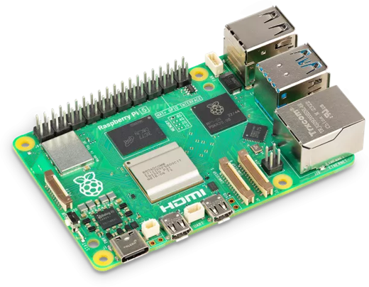
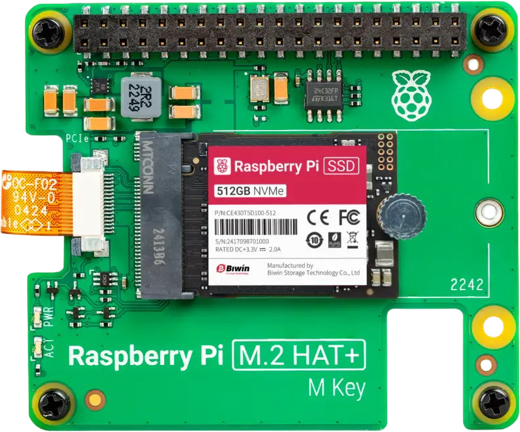
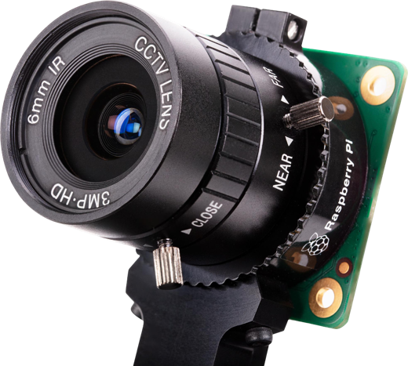
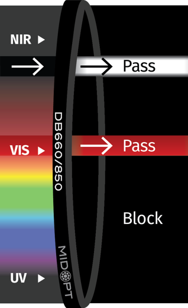
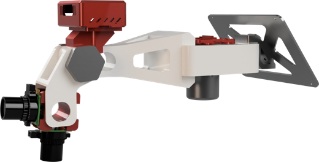

Un aparato portátil de unos 500 € que mide si una planta está sana usando una cámara normal y otra que ve infrarrojo. Desarrollado en el Reto TomatoLED-NDVI de la UPCT.
Dos cámaras, un soporte que gira y una Raspberry Pi que hace las cuentas. Todo en menos de un minuto y sin internet.
La cámara RGB fotografía la planta. El software separa las hojas del suelo y la maceta buscando el color verde (espacio HSV).
Se gira el brazo mecánico hasta la cámara NoIR. La pantalla dibuja el contorno de la planta para alinearla con la foto anterior.
Compara cuánta luz roja y cuánta infrarroja refleja cada píxel. El resultado: un mapa de colores y una nota: bueno, regular o malo.
Una hoja sana absorbe casi toda la luz roja (para la fotosíntesis) y refleja mucha luz infrarroja cercana. Mueve los controles y mira cómo cambia la nota.
Piezas comerciales y un brazo diseñado e impreso en 3D. Todo el cálculo se hace en el propio aparato.

El cerebro: procesador de 4 núcleos que calcula el NDVI de cada píxel con Python, OpenCV y NumPy.

Guarda miles de fotos RGB y mapas NDVI con su fecha y planta, rápido y sin usar la tarjeta SD.

Una RGB para ver y segmentar. Otra NoIR (sin filtro infrarrojo) para captar el infrarrojo cercano.

Deja pasar solo dos «colores»: rojo (660 nm) e infrarrojo (850 nm). Con esas dos bandas se calcula el NDVI.

Diseñado en 3D: lleva la carcasa roja con la Raspberry, la pantalla táctil y un soporte que gira para cambiar de cámara apuntando siempre al mismo sitio.
Existen formas de medir el NDVI desde el espacio, con drones o con sensores de mano. Comparadas con Tomato-AI:
La estructura interna de las hojas dispersa y refleja el infrarrojo cercano, mientras que la clorofila absorbe el rojo. Si la planta sufre, absorbe menos rojo y/o refleja menos infrarrojo, y el NDVI baja.
El NDVI puede delatar un problema (falta de agua o nutrientes, por ejemplo) antes de que se note a simple vista. La cámara normal ayuda a ver el contexto; la infrarroja, a medir.
Tomato-AI mide de cerca y planta a planta. Para vigilar miles de hectáreas, un satélite o un dron cubren mucho más terreno aunque con menos detalle.
Las descarta con la segmentación: solo cuentan los píxeles de planta al calcular la media del NDVI.
Tomato-AI, Reto TomatoLED-NDVI, Universidad Politécnica de Cartagena (UPCT). Divulgación en la Semana de la Ciencia y la Tecnología de Murcia.